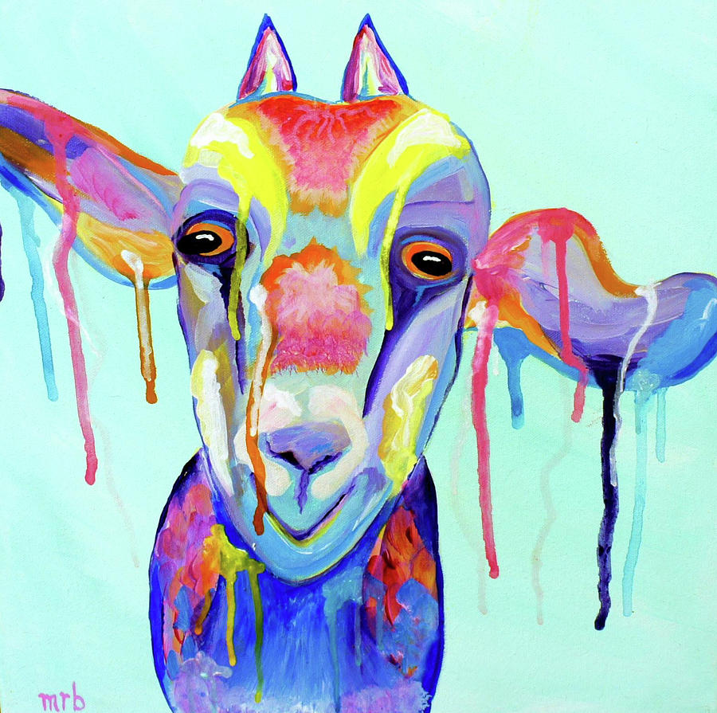

Hello My Name Is Sharonda, My career goals are being my own grapic designer. I attened FIRST GDWD because I wanted to get deep in the grapic world field. FIRST had the perfect program for me, It wasn't to long and just right for me.
I'm 32 yrs old, I live in the United States(Augusta,Ga). Although I would love to live my dreams out in anoter city. I would like to expan my learnings across the world.
My passion is designing clothes,mugs,and logos. In my free time I research different things about my passion so I can master all my skills. I like to read up and watch videos to get a visual understanding of my passion.
People wouldn't know I was really into graphic design by just looking at me. People wouldn't know I run a business already with just looking at me. I love that part of life, because I love to see they reactions of things.
NEW SKILLS
Web Development
Photoshop
Illustrator
Wordpress
UX Designs
